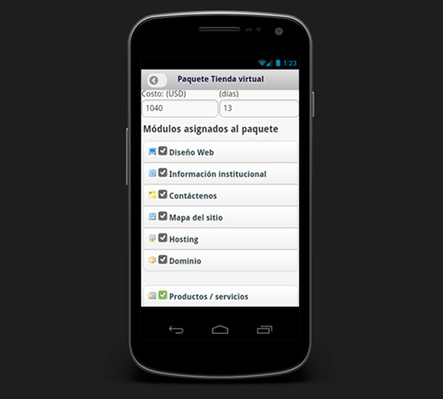

Su navegador no es compatible con las características requeridas, por lo que se les presenta una versión simplificada de esta presentación.
Para una mejor experiencia, por favor utilizar la última versión de Google Chrome , Safari o Firefox .
uso práctico de las TIC en la
AGRICULTURA
* Ing. Fabricio Fernández B. *E-mail: fabricio@enbolivia.com * Web Site:www.enbolivia.com * Teléfonos: 2415690 - 2422542
Problemática
Incremento de la extrema pobreza
Migración del campo a las ciudades
Falta de oportunidades
Ganacia para los intermediarios
Falta de conocimiento para una agricultura sostenible
Brecha digital
Desafíos
Mercado justo
Reducción de la brecha digital
Seguridad Alimentaria
Potenciar la producción
Mejorar la calidad de vida
Cuidar el medio ambiente
Llegar a más gente con menos recursos
Agricultura sostenible
¿Cómo?
Existen diferentes herramientas
Sistemas de Información
Sistemas de Información
Permite la recopilación de datos importantes para el mejoramiento de la producción
Procesos controlados y automatizados para la toma de decisiones
Información de producción cuantitativa oportuna y disponible
Control en el proceso de producción ecológica
Capacitación y acceso a información
Precios de mercado
Control de la temperatura en los viveros
Aplicaciones Móviles
Aplicaciones Móviles
Recibir información de precios de mercado directamente al celular
Revisar reportes de producción
Realizar pedidos y cotizaciones
Datos del clima
Calendarios y alertas
Registro de lugar/calidad de productos mediante GPS/cámara
Web Services
Web Services
Canales de información internacionales de precios de mercado
Proveer información de manera exclusiva a socios
Compartir información de calidad con otras instituciones
GPS / GIS
GPS / GIS
Localización de los campos de producción
Mapas de riesgos climatológicos
Seguimiento de los proyectos comunitarios en beneficio de los productores
Carreteras y caminos
Código de barras
Código de barras
Identificación de los productos
Clasificación de los productos
Trazabilidad de los productos
Características de un producto
Sincronización
Sincronización
Recopilación de la información en el campo donde no existe conectividad
Actualización y centralización de la información desde un telecentro
SMS
SMS
Precios de mercado a solicitud de un SMS
Datos del clima
Consejos para mejorar la producción
Export .doc .xls .pdf
Export .doc .xls .pdf
Al tener la información del productor y su producción en un sistema, se puede generar documentos para trámites en instituciones gubernamentales o municipales
Se puede hacer portable la información para ingresarlos a otros sistemas
Se puede publicar información en formatos estándares para internet
Redes Sociales
Redes Sociales
Apoyar con los movimientos mundiales para el consumo de productos ecológicos
Buscar contactos y apoyo internacional
Promocionar los productos
Promocionar el trabajo que se realiza
Beneficios
Garantizar ingreso de los agricultores
Mejorar la infraestructura y la logística
Fortalecer las exportaciones
Aprovechar al máximo las sinergias para tener información oportuna y adecuada
Mejora de la producción a través de intercambio de experiencias
Mejorar la calidad de vida creando ambiciones de superación en el núcleo familiar
Seguridad alimentaria
Medio ambiente / Producción agro-ecológica
Ejemplos implementados
Sistemas de información
Sistemas de información
Sistemas de información
Aplicaciones móviles

Código de Barras
GPS / GIS
GPS / GIS
GPS / GIS
Sincronización
Sincronización
Exportación de documentos
Intranet
Gracias
Preguntas?
* Ing. Fabricio Fernández B. *E-mail: fabricio@enbolivia.com *Web Site:www.enbolivia.com *Teléfonos: 2415690 - 2422542